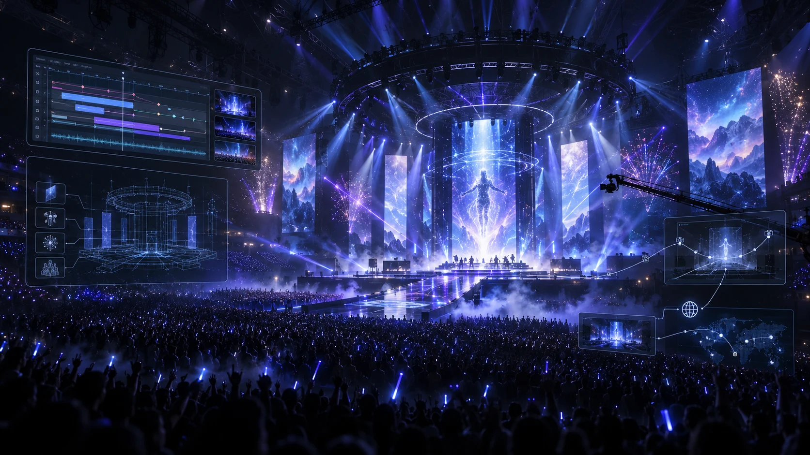

Direct the performance
Author camera shots, reusable camera sequences, custom drone paths, artist cues, crowd patterns, lighting, screens, and show effects.

Virtual Concert brings concert direction, automation, playback, rendering, and online delivery into one Unreal Engine production system.
A connected production environment for designing and delivering complete virtual concerts.
The system coordinates the creative layers of a show through a shared concert timeline. Cameras, lighting, crowd behavior, screens, shader effects, fireworks, weather, and time of day can be authored as synchronized events.
It also handles the operational side of production. Concert drafts can be saved, rendered into standard or immersive video formats, prepared with media processing tools, and published through connected online services.
Independent managers keep complex features modular while a central concert controller synchronizes recording, playback, automation, and replay.
Author camera shots, reusable camera sequences, custom drone paths, artist cues, crowd patterns, lighting, screens, and show effects.
Analyze bass and mid-range energy, then use configurable rules to generate event timing and repeatable performance layers.
Record keyframes, adjust speed and duration, organize multiple timeline layers, pause, seek, replay, and finalize each authored track.
The workflow carries creative decisions through playback, high-quality rendering, file processing, and connected delivery.
Build the concert with layered events, media, cameras, effects, crowd behavior, and stage lighting.
Run the full show in real time, seek through the performance, and revise individual layers without rebuilding the concert.
Generate runtime Level Sequences and render standard, 180, or 360 output through the Movie Render Pipeline.
Process video and audio, upload concert media, and connect the finished experience to online viewing and interaction.
The architecture combines runtime systems, production tooling, media infrastructure, and scalable real-time content.
Hierarchical instancing, animation-to-texture support, crowd generation layers, behavior patterns, shouts, and character locomotion support large virtual audiences.
Reusable Level Sequences, category-based shot selection, recorded drone movement, playback offsets, and custom camera control support varied coverage.
Media screens, footage tracks, shader effects, fireworks, lighting, weather, and time-of-day systems respond to the same concert playback state.
Authentication, HTTP and WebSocket communication, file upload and download, concert publishing, chat, reactions, and Pixel Streaming extend the experience beyond the editor.
Virtual Concert turns a collection of Unreal Engine features into a coherent production platform. Creative teams can build synchronized performances, iterate in real time, produce final media, and deliver the experience online without splitting the workflow across disconnected tools.